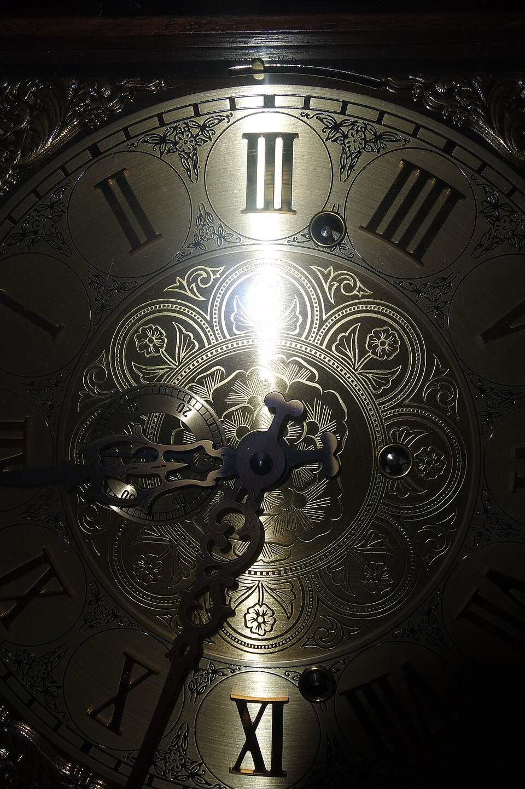

A Letter Arrives...
Dear Detective,
Elias Thorne, the best clockmaker in Willowbrook, has disappeared. His shop was found unlocked this morning, every clock in the house stopped at exactly the same time. The police say he simply went on holiday. I don't believe them.
Please come to his house. Look carefully, everything is a clue.
- A worried friend
Welcome back, . You have found 0 clue(s) so far.
Continue investigating